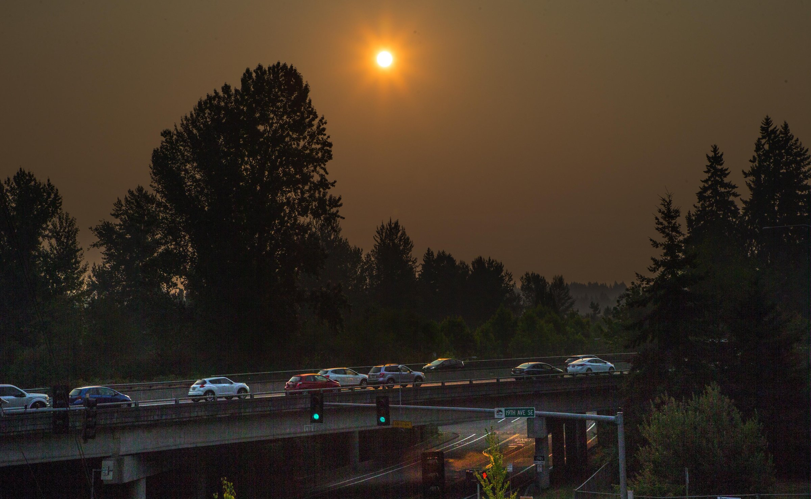

Here are some tips to help you stay safe and healthy

Home
Wearing a face mask to reduce the intake of particulate matter
Dr. Rick Bowles of the Pacific Medical Center in Seattle recommends purchasing
a high-efficiency particulate air filter (HEPA) that’s rated as filtering out 99 to 100 percent
of the most penetrating particle-size material.
Don’t be an exercise addict, Bowles said. Sure, exercise is good — even great — for you. But too much of a good thing on a day with smoke in the air can be dangerous. If you cannot skip a day, at least try to get to the gym for your workout, he said. And if even that is too much to ask, well then at least protect yourself from the heat, if not the haze, by exercising in the earliest morning hours.
People with asthma, emphysema and other lung ailments should keep necessary and recommended medications at hand. Carry rescue inhalers on your person or in your car, he said.
Stay hydrated. Keep a glass of water with you and sip from it all day. Keeping hydrated reduces the amount of smoke that can travel deep into your lungs
Wear loose and light-colored clothing.
Keep windows and doors closed. If there is no air conditioning and it is too hot to
Run an air conditioner (if you have one), set it to re-circulate and close the fresh-air intake. Make sure to change the filter regularly.